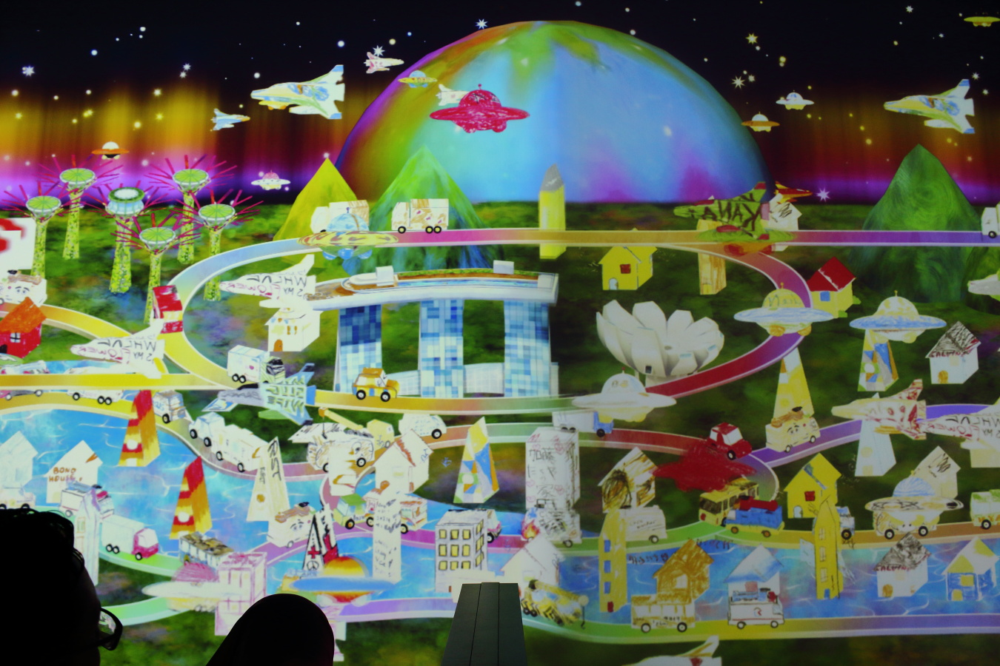

ArtScience Museum, Light to Night Festival
Week 2
A taste of Singapore's modern creativity.
The shadow of our SOCIETY DUN DUN DUNNN
Amidst getting lost and missing many shuttle buses in the first weeks of school (BTC1 I cry), it was time to explore a little culture on weekend... ie we told ourselves it was time to get some artsy fartsy photos for the insta, tinder, whatever.
ArtScience Museum
We explored 3 different exhibitions at the ArtScience Museum in the sleek Marina Bay area.
Art from the Streets featured work spanning the last 40 years, showing the evolution of raw and urban contemporary expression. Apologies for the lack name and artist on these work.
Treasures of the Natural World features samples from the Natural History Museum, detailing the history of collectors (borderline hoaders in some cases), explorers, and their contributions to the preservation and understanding of species. Fun facts involve the dissection of "dinosaur" to mean "terrible lizard" and the origins to the name "Birds of Paradise" or Paradisaea apoda (no feet). They were named so because early trade to Europe received the birds legless. They had none because the natives who sold them cut them off, but the creative Europeans thought the beautiful birds hail from heaven and only fell to earth upon death. So very poetic.
Future World is where art meets science to make very interactive art. You could interact with all of the art in some way, whether it be drawing your own fish and watching it swim in the tank of the screen, or playing Fruit Ninja with your body as you go down a slide.
You can place your own house into this mini Marina Bay
Every single invidual particle (seen in motion as a strand) which makes up this virtual ocean has its 3D motion and interactions calculated, to create this realistic and wistful live image.
And finally (what you really came for) here are this week's photos from Asia's Next Top Models :

Light to Night Festival

Singapore is very good at lights, and you can watch beautiful colourful light shows daily. But maybe because everyone is used to these high standards, the National Gallery spices up the night views even further by putting a show on several buildings in the downtown area.